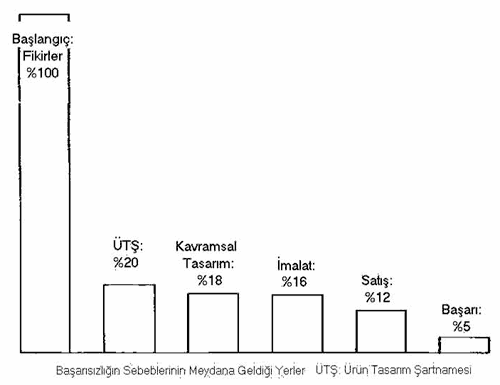
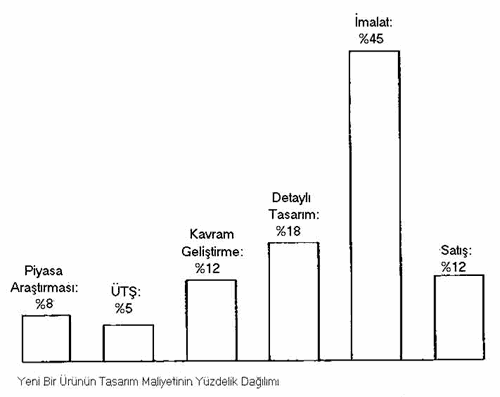

|
"Ürün
Statüsü"nün Tasarým Yönetiminde Önemi
- Tasarým
sürecinin doðru þekilde yönlendirilebilmesi için ürün statüsünün
ve þirketin hangi statüde ürünler için daha elveriþli olduðunun
belirlenmesi gerekir.
- Ürün
statüsünün bilinmesi eldeki imkanlarýn optimum þekilde kullanýlmasýný
saðlar, gerekmeyen yerlere kaynak israfýný önler.
- Ürün
statüsünün bilinmesi, þirketin üretime dair geleceðe yönelik
doðru planlar yapmasýna yardýmcý olur.
Piyasa
Araþtýrmasýnýn Tasarým Yönetimindeki Yeri
- Doðru
bir piyasaya ve iyi tesbit edilmiþ bir ihtiyaca cevap verecek
bir ürün için iyi bir piyasa araþtýrmasý þarttýr.
- Piyasa
araþtýrmasý süresince elde edilen, insanlarýn bir ürünü
diðerine tercih etme sebeblerinin çoðu toplam tasarým süreci
içerisinde tasarlanabilir özelliklerdir:
- Güvenilirlik
- Kalite
- Emniyet
- Dayanýklýlýk
- Kolay
bakým
- Ergonomi
|
- Statü
- Marka
- Performans
- Estetik-Moda
- Ek
özellikler
- Konfor
|
- Kredi
politikasý
- Ulaþýlabilirlik,
teslim hýzý, etkin daðýtým
- Kanuni
ya da alýþýlmýþ standartlara uygunluk
- Boyut
- Paketleme
- Satýþ
sonrasý servis aðý
|
- Çevreyi
kirletmeme
- Farklý
ortamlarda kullanýlabilme
- Raf
ömrü
- Kolay
kurulma
- Yasal
düzenlemeler
|
NEDEN
ÝYÝ BÝR TASARIM YÖNETÝMÝ GEREKLÝDÝR?
- Sayýca
artan üretim ve ürünlerde çeþitlilik,
- Bilinçlenen
tüketici,
- Globalleþmenin
de etkisiyle yükselen rekabet,
- Rekabet
edebilme gücünü en üst düzeye çýkarmanýn birinci þartý iyi
bir tasarým yönetimi ile daha iyi bir ürün tasarlamaktýr.
- Ýyi
bir tasarým yönetimi pazarlamayý, tasarýmý ve üretimi bir
arada düþünerek programlarýný yapar.
Ürün
Tasarýmýnda Baþarý ve Baþarýsýzlýk Nedir?
- "Baþarýsýz
bir ürün, üreticisinin beklentilerine piyasada cevap veremeyecek
durumda kalan üründür".
- "Baþarýlý
bir ürün ise, belirlenen süreyi ve maliyet sýnýrlarýný aþmadan,
organizasyonun iþ akýþýný bozmadan, hedeflenen performans
seviyesini yakalayarak ve müþteri tarafýndan kabul görerek
þirketin hedeflerini gerçekleþtiren üründür".
Baþarýsýzlýk
Nerede Baþlar?

Baþarýsýzlýðýn
Sebebleri Nelerdir?
- Eksik
piyasa araþtýrmasý
- Piyasa
þartlarýný dikkate almama
- Etkin
bir proje seçme ve deðerlendirme sistemine sahip olamama
- Yanlýþ
proje yönetimi
- Yaratýcý
fikirlere sahip olamama
- Yeniliklere
açýk olmama
Tasarým Sürecinde Maliyet Daðýlýmý

|